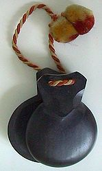

Castanets are a percussion instrument (idiophone), used in Kalo,
Moorish,Ottoman, ancient Roman, Italian, Spanish, Sephardic, Swiss, and
Portuguese music. The instrument consists of a pair of concave shells joined on
one edge by a string.
They are held in the hand and used to produce clicks for
rhythmic accents or a ripping or rattling sound consisting of a rapid series of
clicks. They are traditionally made of hardwood (chestnut; Spanish: castaño),
although fibreglass is becoming increasingly popular.
In practice a player usually uses two pairs of castanets. One pair is held in
each hand, with the string hooked over the thumb and the castanets resting on
the palm with the fingers bent over to support the other side. Each pair will
make a sound of a slightly different pitch.
The origins of the instrument are not known. The practice of clicking hand-held
sticks together to accompany dancing is ancient, and was practiced by both the
Greeks and the Egyptians. In more modern times, the bones and spoons used in
Minstrel show and jug band music can also be considered forms of the castanet.
During the baroque period, castanets were featured prominently in dances.
Composers like Jean-Baptiste Lully scored them for the music of dances which
included Spaniards (Ballet des Nations), Egyptians (Persée, Phaëton), Ethiopians
(Persée, Phaëton), and Korybantes (Atys).
In addition, they are often scored for
dances involving less pleasant characters such as demons (Alceste) and
nightmares (Atys). Their association with African dances is even stated in the
ballet Flore (1669) by Lully, "... les Africains inventeurs des danses de
Castagnettes entrent d'un air plus gai ..."
A rare occasion where the normally accompanying instrument is given concertant
solo status is Leonardo Balada's Concertino for Castanets and Orchestra Three
Anecdotes (1977).
The "Conciertino für Kastagnetten und Orchester" by the German
composer Helmut M. Timpelan, in cooperation with the castanet virtuoso, José de
Udaeta, is another solo work for the instrument. See also the tocatta festiva
for castanets by Allan Stephenson. Sonia Amelio has also performed her castanet
arrangements as a concert soloist.

In the late Ottoman Empire, köçeks not only danced but played percussion
instruments, especially a type of castanet known as the çarpare, which in later
times were replaced by metal cymbals called zills.
Castanets are often played by singers or dancers. Contrary to popular belief,
castanets are not commonly used in the flamenco dance, except for two specific
forms: zambra and siguiriyas.
In fact, Spanish folk dance "Sevillanas" is the
style typically performed using castanet. Escuela bolera, a balletic dance form,
is also accompanied by castanets. The name (Spanish: castañuelas) is derived
from the diminutive form of castaña, the Spanish word for chestnut, which they
resemble. In Andalusia they are usually referred to as palillos (little sticks)
instead, and this is the name by which they are known in flamenco.
Castanets were used to evoke a Spanish atmosphere in Georges Bizet's opera,
Carmen. They are also found in the "Dance of the Seven Veils" from Richard
Strauss' opera Salome and in Richard Wagner's Tannhäuser.
An unusual variation
on the standard castanets can be found in Darius Milhaud's Les Choëphores, which
calls for castanets made of metal. Other uses include Rimsky-Korsakov's
Capriccio espagnol, Ravel's Rapsodie espagnole, Francis Poulenc's Concerto for
Two Pianos and Orchestra in D minor and Karl Jenkins's Tangollen.
One can also see Spanish influence in Napoletan music through the presence of
castanets, as it was registered by Athanasius Kircher on his Tarantella
Napoletana (tono hypodorico).
Mounted castanets:
When used in an orchestral or jug band setting, castanets are sometimes attached
to a handle, or mounted to a base to form a pair of machine castanets. This
makes them easier to play, but also alters the sound, particularly for the
machine castanets. It is possible to produce a roll on a pair of castanets in
any of the three ways in which they are held. When held in the hand, they are
bounced against the fingers and palm of the hand; on sticks, bouncing between
fingers and the player's thigh is one accepted method. For a machine castanet, a
less satisfactory roll is obtained by rapid alternation of the two castanets
with the fingers.